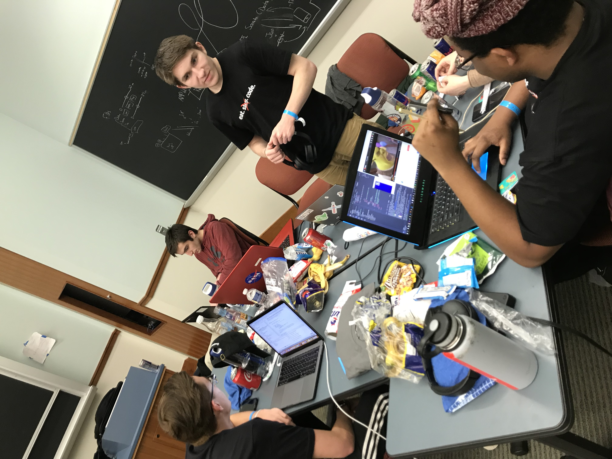
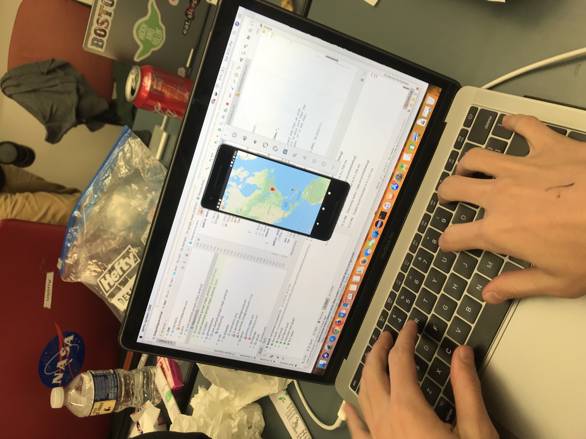
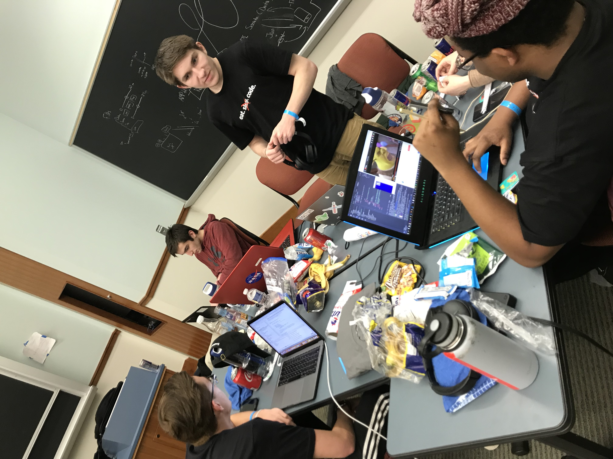
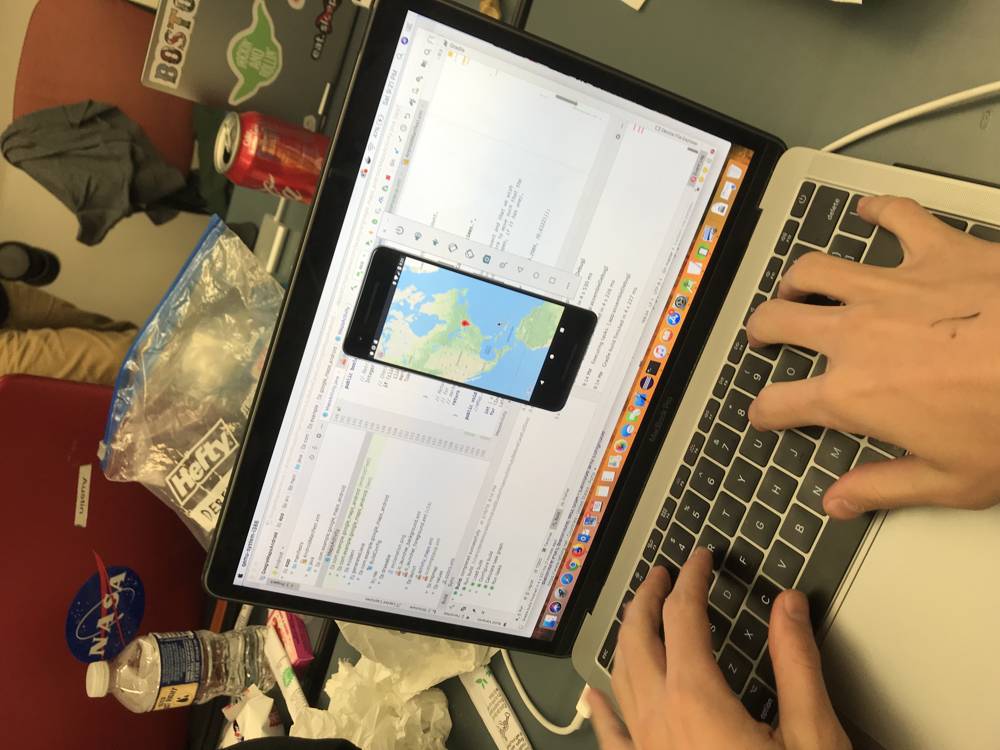

about the app
BMoreCareful is an android app designed with the hopes of increasing awareness and safety in Baltimore. It uses data pulled from the Baltimore Police Department to show users where 911 calls have come from within the past 24 hours.
the process
We set to work on the app right away on friday. We accomplished roughly 2% of the app on Friday and the remaining 234% on Saturday. Our development includes severall subfields of programming:
Port listening
Socket connecting
Android Studios
Socrata API, GoogleMaps & GooglePlaces API, Geocoding API
HTML & Domain.com
 
